基线 · 母女矛盾 10:(6+4) 模板默认
case76 · r_944d9f4cd51f9230 · 375.1s
画质 5：M2/M3 双侧锚点
👤 「基线水平」
先给非 LoRA 结论：LoRA 的风格/双强度寻优依赖 steps 参数（模块4 待本报告 A/B 档定档后再扫）。
其余参数未调的原因：① 时长/chunks——素材时长不定，因素材的信息量不定（剧情动作/对白密度决定讲完需要几秒），是内容属性而非可调变量，统一取模板上限 15s 对照；② 画幅 9:16 / megapixels 0.9——业务交付规格锁死，非评测维度；③ seed——单变量方法学固定，不调；④ sampler——非 euler 系被 397 SelfLift 架构运行期拒绝，可选集只剩 euler。
适用：单人/少人叙事、对白文戏、动作武戏、情感特写以外的常规镜头。已证与 10 步无可辨画质差距，省约 20% 算力。
euler · beta · lowres_scale=0.6（降本探档 0.55，见 M2） · steps=8 · transition_step=6（低分6 + 高分2）依据：文戏/母女三档全 5；武戏持枪三档全 5、霓虹三档全 4（动作戏对步数「不更敏感，甚至更不敏感」）；速度 −20~21%（母女 375.1→297.2s、持枪 451.7→354.7s、霓虹 462.1→363.8s）。语义遵循无退化。
适用：① 道具文字特写（广告瓶身「白桃」/拉环类高频细节）② 情绪表演强度敏感特写（持枪哭戏类）③ 多主体一致性极限（badcase 多人，泛化批验证）。人工测评维度证据压过 AI 结构维度证据。
euler · beta · lowres_scale=0.6（降本探档 0.55，见 M2） · steps=10 · transition_step=6（低分6 + 高分4）依据：8:(4+4) 白桃崩「半字」；持枪人工情绪判词随砍步单调衰减（非常到位→中等→不准确）——而 AI 抽帧三档全 5，该差异恰属静态抽帧盲区 → 以人工测评为准留 10 步。
两档共用：9:16 · megapixels 0.9 · 15s · chunks=2 · seed 固定 · 8:(4+4) 全场景禁用（无安全边际，且实测不比 8:(6+2) 更快）。scheduler 恒 beta（M1 两对同向微胜 + 面板默认）。
| 模块 · 变量 | 基线 → 各档 · 画质 | 语义遵循（prompt 要素还原） | 速度（服务端实测 s） | 人工测评（平台打标原文） | 结论 |
|---|---|---|---|---|---|
| M1 scheduler simple vs beta 素材：白桃 / 人物中近远景 基线=模板默认(beta) | 白桃：simple 5 vs beta 5 人物远景：simple 4 vs beta 5 | 两素材全要素还原（文字/道具/头身比/服装）；simple 失分点非语义：t8 镜面微错位、远景腿脚色块化 | 白桃 474.6 vs 472.7；远景 456.7 vs 457.8 耗时与 scheduler 无关（±0.5%） | 「人物光影平，脸相对自然」vs「光影更好…瓶身细节实感更好」；「皮肤自然一点」vs「有高光感，闪光灯更自然」 | beta 两对同向微胜；即默认值 → 不改配置 |
| M2 lowres_scale 0.5~0.7 素材：母女 / 白桃 基线=0.6 | 母女：0.5 3 → 0.6 5 → 0.7 5 白桃：0.55 / 0.6 / 0.65 全 5（平台期） | 0.5 档面部塑料化、鬓角糊缕＝角色身份特征弱化；「白桃」文字五档全程可读（语义稳） | 母女 359.1(0.5) / 375.1(0.6) / 414.4(0.7) 白桃 453.0(0.55) / 458.8(0.6) / 486.4(0.65) ls 主导耗时：0.5→0.7 涨 15% | 0.5 档：「人物声音和脸的运动匹配差」——与 AI「涂抹」判定独立同向 → 0.5 出局 | 0.6 安全主档；0.55 可用（白桃实测无劣化、更快；文戏未跑，属降本探档）；0.5 出局 |
| M3 步数 · 文戏/广告 10:(6+4) / 8:(6+2) / 8:(4+4) 素材：母女 / 白桃 基线=10:(6+4) | 母女三档全 5（平坦） 白桃 5 / 5 / 3：8:(4+4) 崩「白桃」半字、t5 拉环糊 | 人数/构图/面孔三档全程锁定＝结构语义不敏感；崩坏集中高频细节（文字/道具） | 母女 375.1 → 297.2（⚡−21%）→ 342.6 白桃 458.8 → 366.9（⚡−20%）→ 418.2 8:(4+4) 反不比 8:(6+2) 快 | 终审同向「6+2 好于 4+4」 | 文戏/广告定 8:(6+2)；8:(4+4) 出局 |
| M3+ 武戏加测 同三档 素材：持枪 / 霓虹雷霆 基线=10:(6+4) | 持枪三档全 5（平坦无区分度） 霓虹 4 / 4 / 4（8:4+4 临界3.5） | 枪械数量/肢体/双人互换/角色：零结构崩坏；t6.5 白爆光判为风格化雷霆光效非噪点（语义正确） | 持枪 451.7 → 354.7（⚡−21%）→ 405.3 霓虹 462.1 → 363.8（⚡−21%）→ 413.7 | ⚠ 情绪判词随砍步单调衰减：「情绪非常到位」→「情绪中等」→「情绪不准确」——与 AI 结构判词方向相反 | 8:(6+2) 通吃武戏结构面；表演/情绪面留终审 → B 档保留 10:(6+4) |
◈ 横向规律（四模块合并）：画质与语义崩坏均由「高频细节密度」驱动，而非运动强度/题材类型；速度只受 lowres_scale 与总步数驱动；人工测评在 AI 盲区（情绪连续性、声画匹配）提供了独立且方向不同的关键证据。
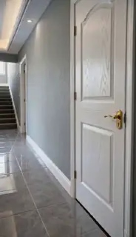
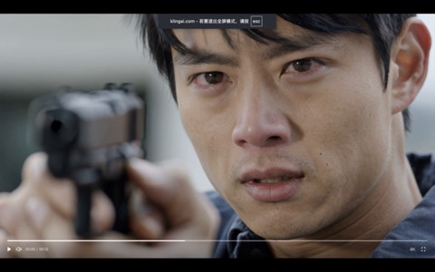
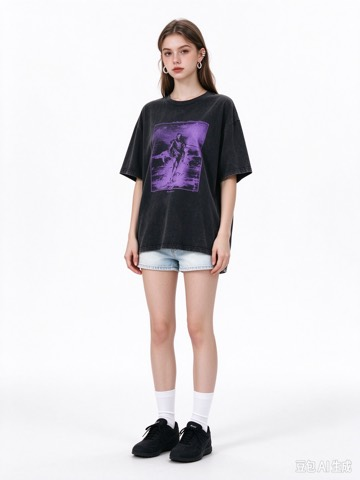
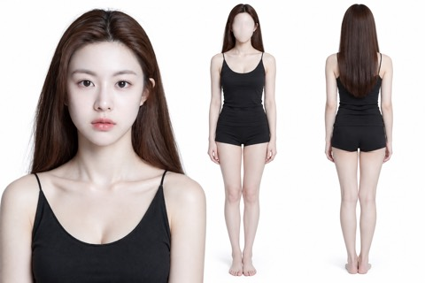
画质 5：M2/M3 双侧锚点
👤 「基线水平」
画质 5：文字/道具完好
👤 —
非 euler（dpmpp_2m / euler_cfg_pp）全部被 397 SelfLift 运行期拒绝；karras 1、normal 2 人工出局（「76比83好」）。下方为 simple vs beta 平局打破两对（含基线）。
画质 5，作对照锚
👤 —
画质 5：t6/t9「白桃」全程可读、双人稳定；轻度磨皮感
👤 人物光影平，脸相对自然，中景脸变形，瓶身细节少一点
画质 5：拉环金属高光、水珠立体、t11 发丝锐度略优
👤 人物光影更好，脸油一点，中景脸变形更严重，瓶身细节实感更好
画质 4：t8 镜面倒影微错位、远景腿脚色块化；头身比/服装还原 OK
👤 人物皮肤自然一点
画质 5：织物褶皱/发丝高频略优、黑幕更纯净
👤 人物皮肤有高光感，闪光灯更自然
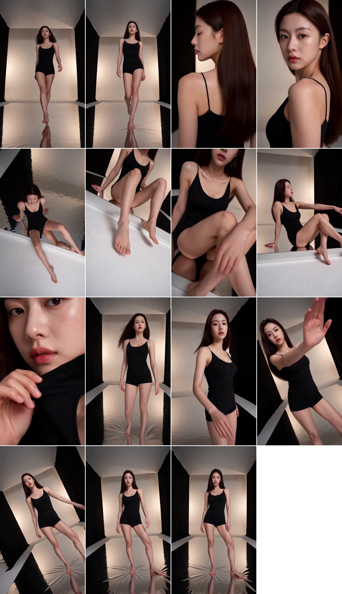
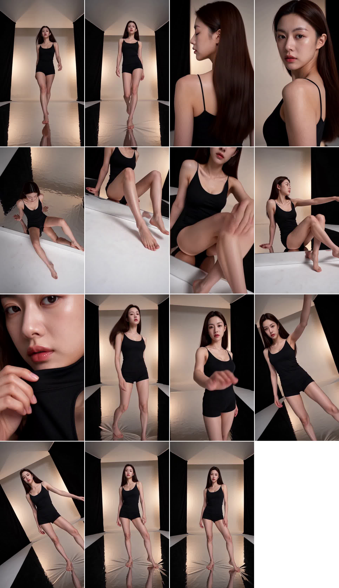
✔ beta 两对同向胜出（幅度轻微、恰为面板默认 → 维持不改）。置信度：方向中等、幅度低；建议人工 24fps 复核对 B（镜面/远景动态）。
画质 5（双跑一致锚点）
👤 基线水平
画质 3：t5–t8 面部塑料化、鬓角糊缕、针织纹理涂抹；语义：角色身份特征弱化
👤 0.5 人物声音和脸的运动匹配差
画质 5：与 0.6 不可分 → 多花 10% 算力无增益
👤 —
画质 5：「白桃」笔画全程正确
👤 0.55≈0.6 且更快（人工补记）
画质 5
👤 —
画质 5：水珠/罐沿高光略优但不构成升级
👤 —
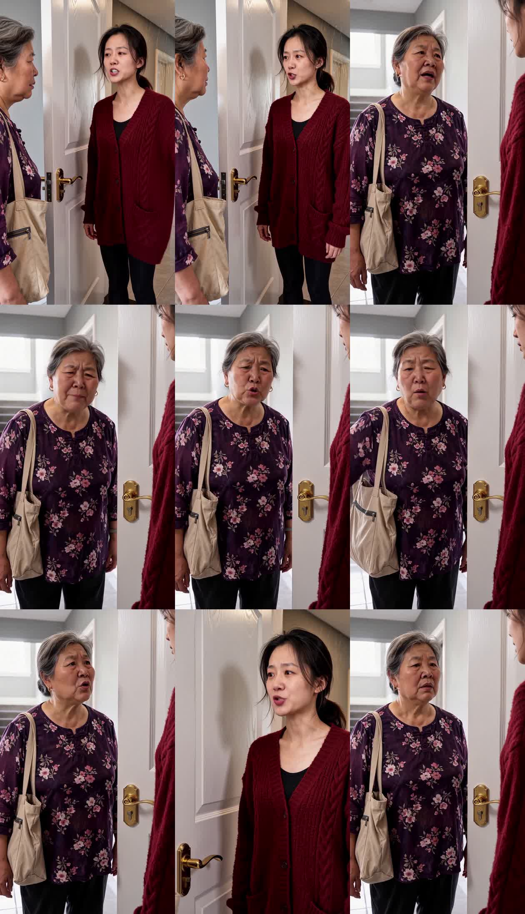
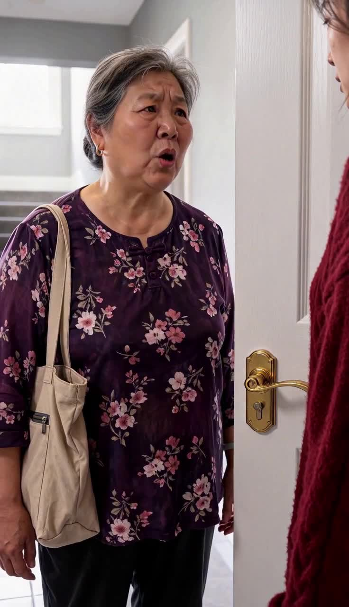
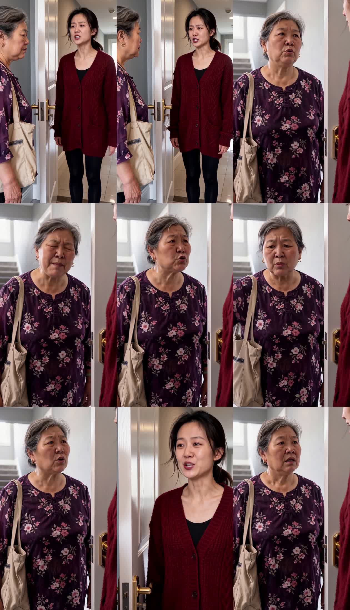
✔ 0.6 为安全主档；0.55 已证可用（白桃平台期无劣化且更快），作降本探档采用——注意文戏侧 0.55 未直跑（0.5 出局、0.6 通吃之间内插），泛化批可顺带补测。0.5 档 AI「涂抹」与人工「声画匹配差」双重印证出局；0.7 无增益。
语义：steps=总步数、transition_step=低分一采步数，余数=高分精修。「结构早熟、细节晚熟」。
画质 5
👤 基线水平
画质 5：与锚并排无可辨差距（人数/面孔/构图锁定）
👤 —
画质 5：低细节负载文戏测不出差异
👤 —
画质 5：文字道具完好
👤 —
画质 5：「白桃」保住、拉环清晰
👤 —
画质 3：t9「白桃」剩半字、t5 拉环糊成一团（语义：品牌文字丢失）
👤 终审：6+2 好于 4+4
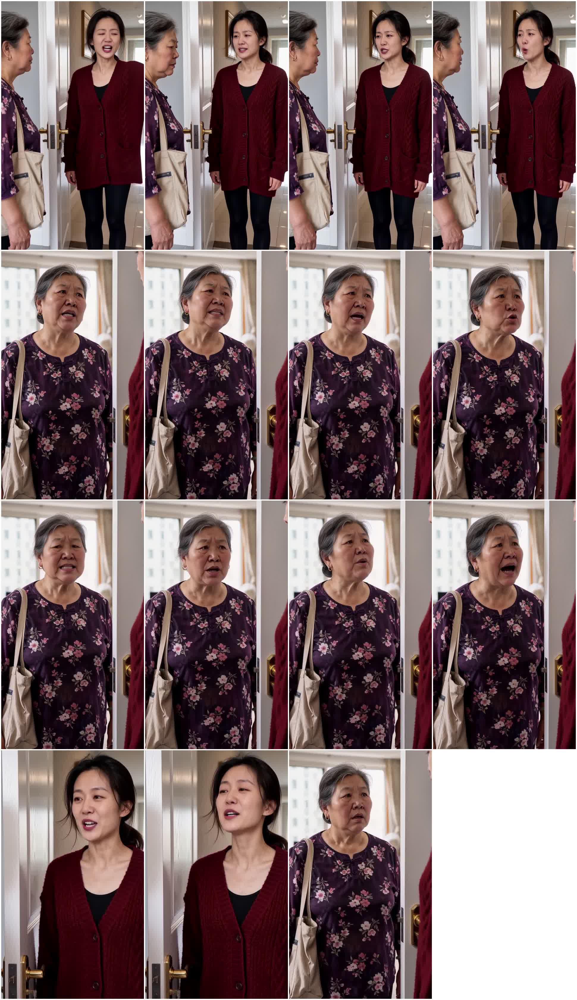
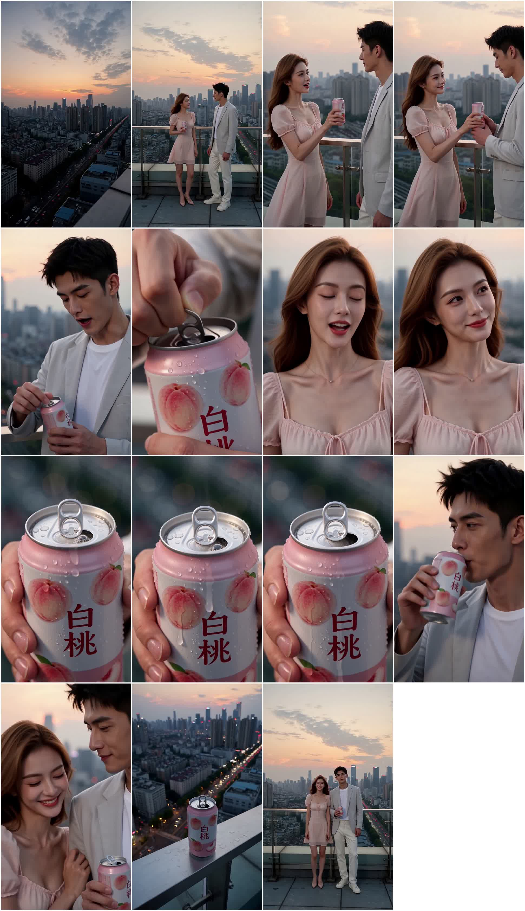
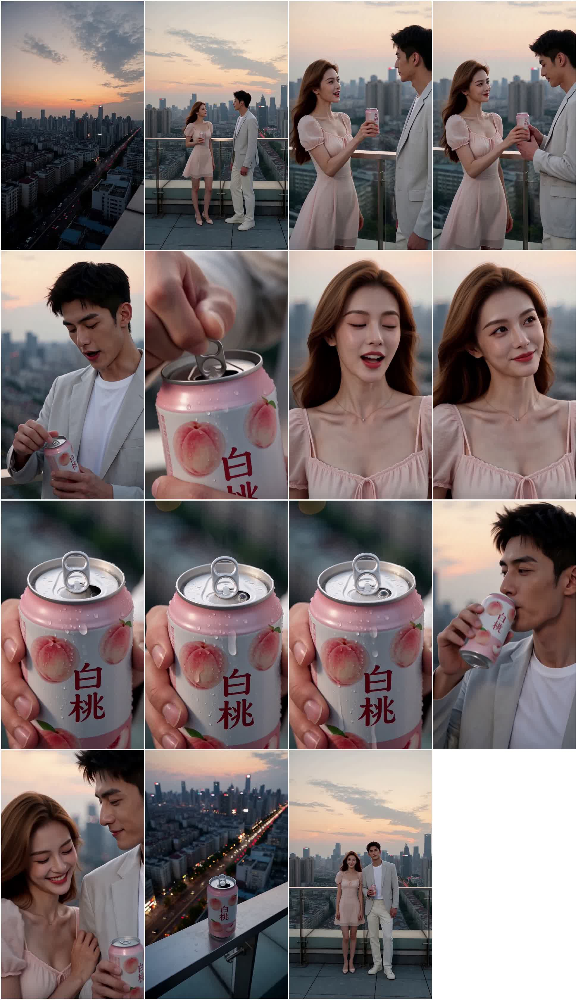
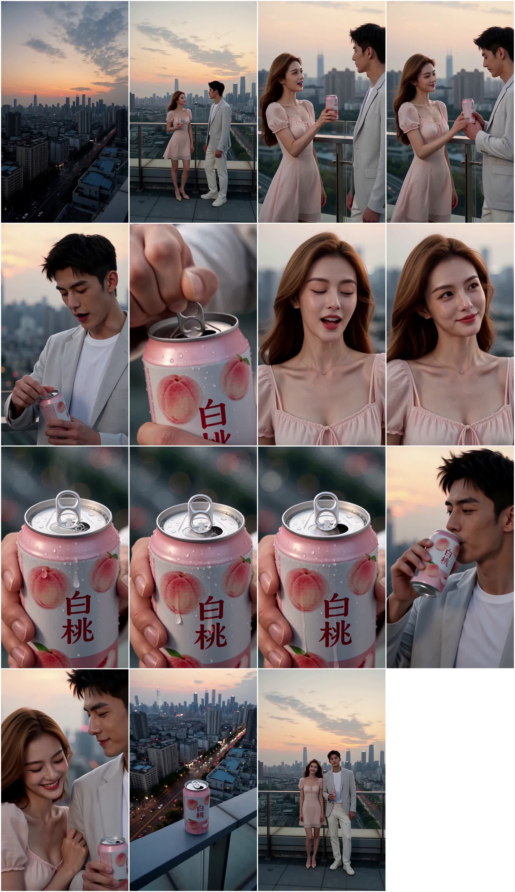
✔ 文戏/广告定 8:(6+2)；8:(4+4) 崩高频细节出局。F2 落 3 分 65% 置信（或为运动模糊一瞬，人工 2x 对看可上修）。
验证目标：动作戏是否对步数比文戏更敏感。前置校验：6 条源视频 md5 互异、同刻抽帧哈希互异 → 独立生成成立。
画质 5：枪械单支套筒准星稳定、双手握持不融合
👤 情绪非常到位
画质 5：与锚逐时刻并排无可辨差距
👤 情绪中等
画质 5：无劣化（本素材高频负载低）
👤 情绪不准确
画质 4：肢体完整、双人缠斗不互换；t6.5 爆光=风格化光效非噪点
👤 —
画质 4：与 10 步并排无可辨差距
👤 —
画质 4 临界3.5：发丝粘连加重、t9.5 右缘黑斑疑飞鞋（道具存疑）
👤 —
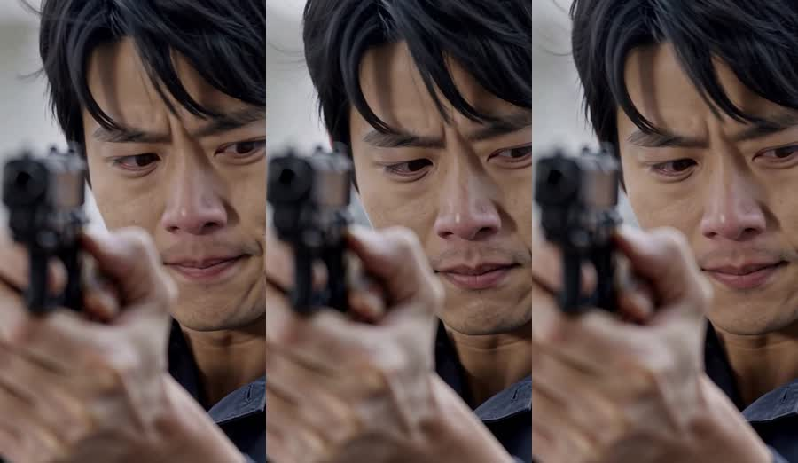
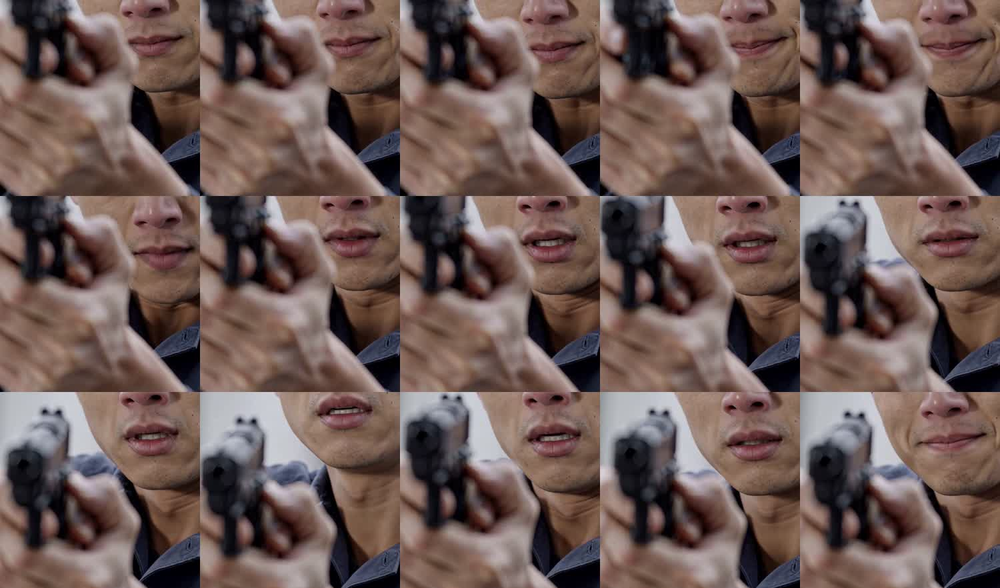
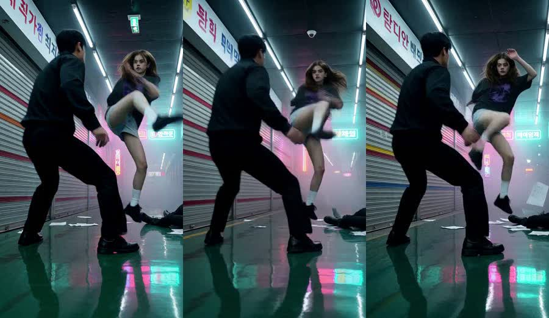
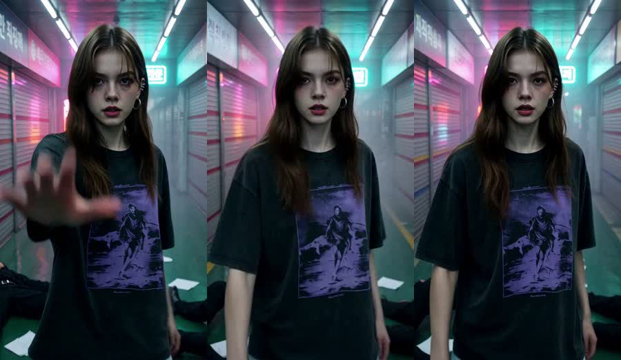
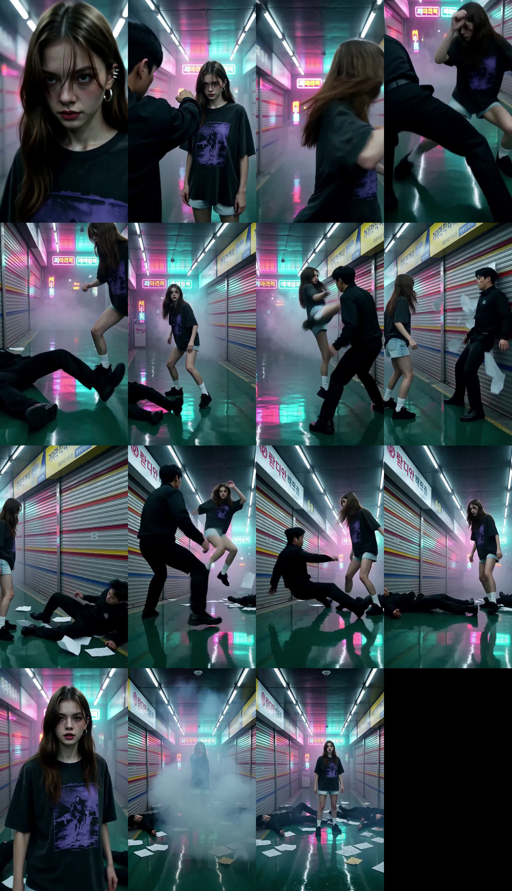
✔ 核心判答：动作戏对步数「不更敏感，甚至更不敏感」——步数敏感度由画面高频细节密度决定，而非运动强度（动态模糊+强光+纯色块掩盖低精修步数的高频损失）。⚠ 冲突裁决点：持枪人工情绪判词（到位→中等→不准确）与 AI 三档全 5 相反，该差异属静态抽帧盲区（情绪连续性）→ 以人工为准：表演强度敏感镜头留 B 档 10:(6+4)。
◐ 需人工 24fps 看片背书：neon t3–9 打斗连续性（AI 置信仅~30%）、t6.5 爆光是否闪屏、gun 手部逐帧、neon_8_4p4 t9.5 黑斑是否道具漂移、音画同步（未评）。
15s / 9:16 / 0.9MP 对照。8:(6+2) 平均省 21%；8:(4+4) 介于两者之间甚至更慢且不省质量优势 → 无收益不取。
母女矛盾（文戏） 8:(6+2) 省 21%
白桃汽水（广告） 8:(6+2) 省 20%
持枪（情感特写） 8:(6+2) 省 21%
霓虹雷霆（动作） 8:(6+2) 省 21%